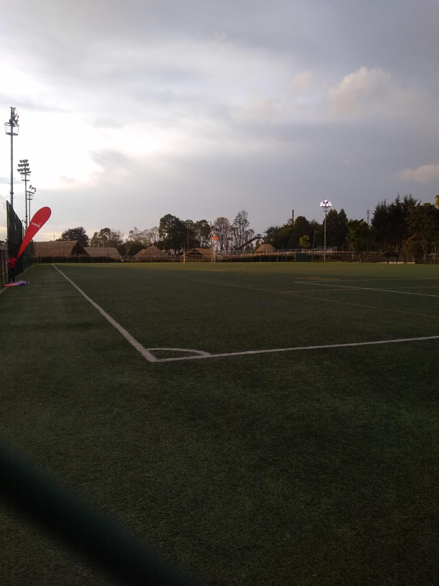
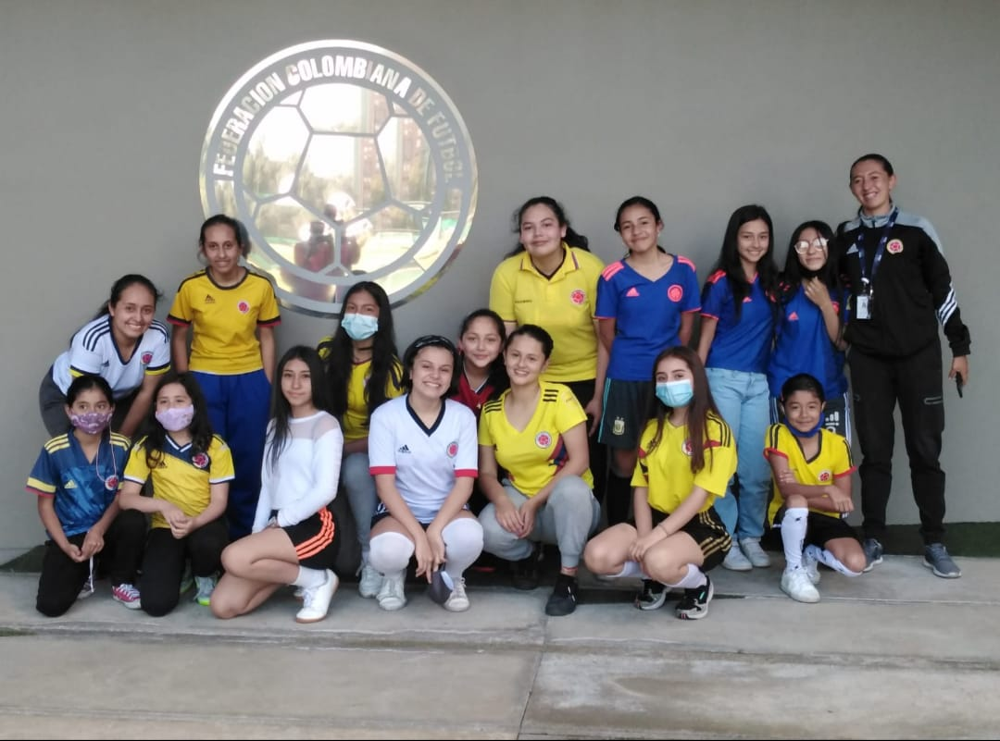

Mi mayor hobby es dormir. También me gusta salir a caminar y conocer lugares nuevos. Cuando vivía en Bogotá, amaba jugar al fútbol, ya que me ayudaba a desestresarme. Sin embargo, aquí en Quindío ya no me da tanta motivación, ya que hace bastante calor.
Otro hobby es jugar al fútbol con mis amigos. Siempre disfrutamos mucho de los partidos y es una excelente forma de mantenerme activa.
Jugabamos campeonatos contra las demas localidades que habia en Bogota, fuimos mejorando mucho hasta que ya un dia todos buscamos otro rumbo